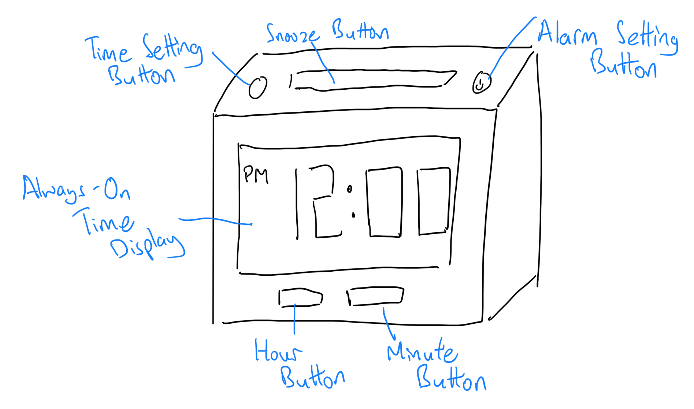
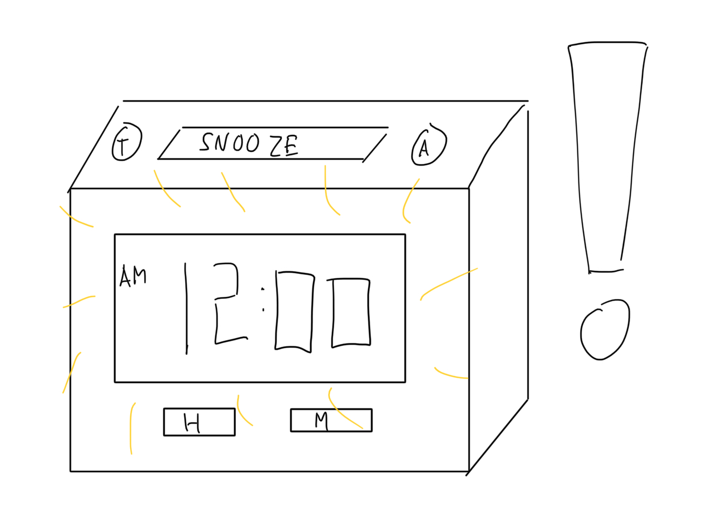
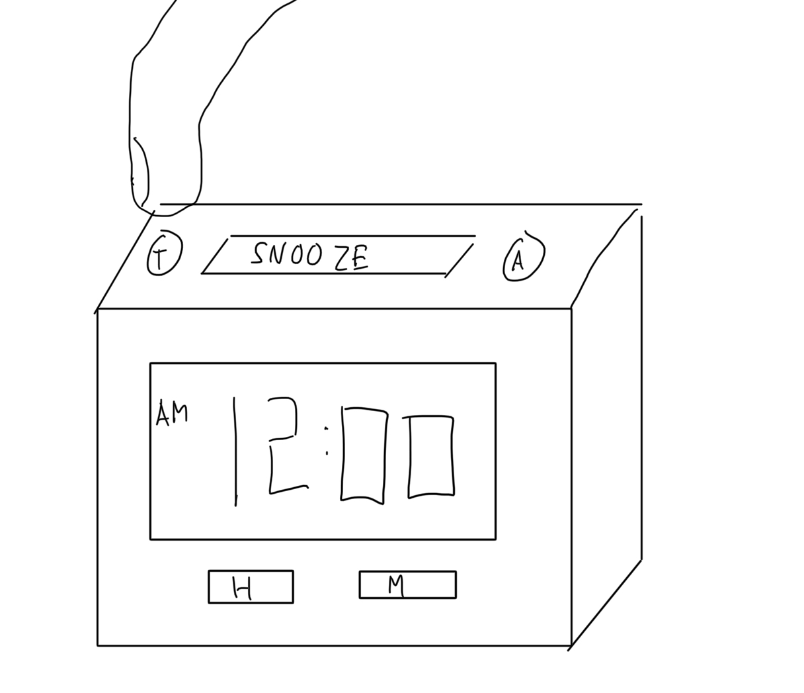
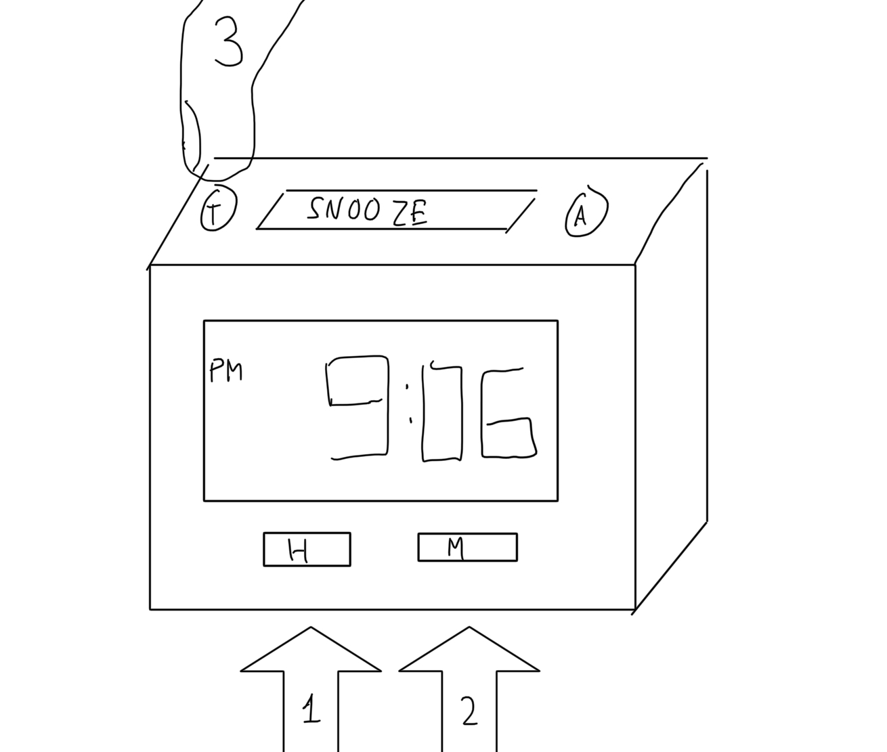
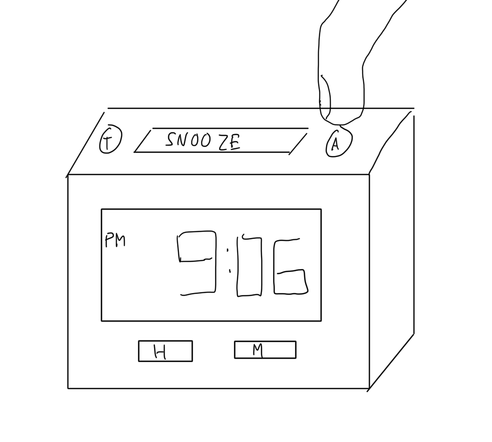
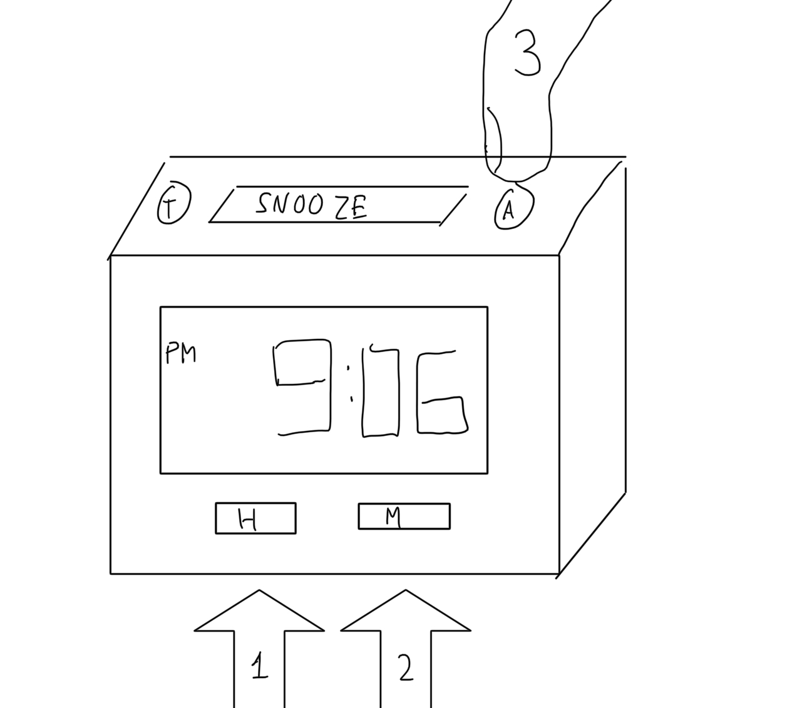
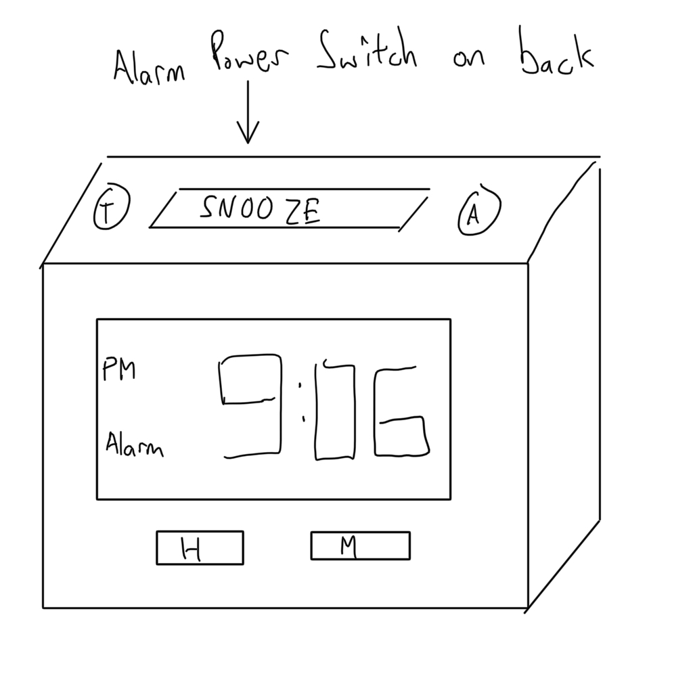
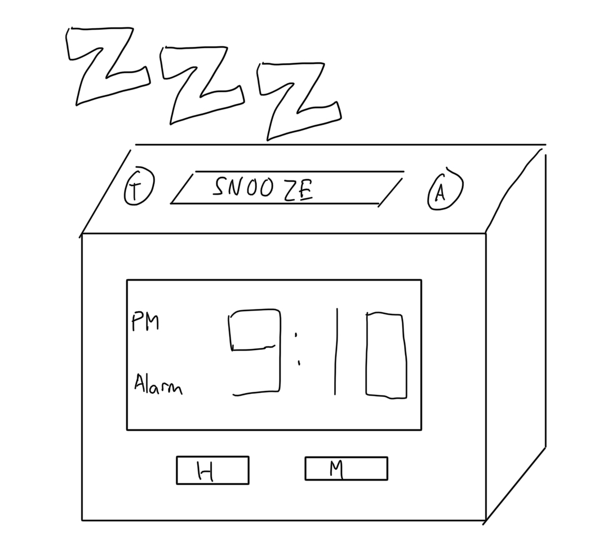
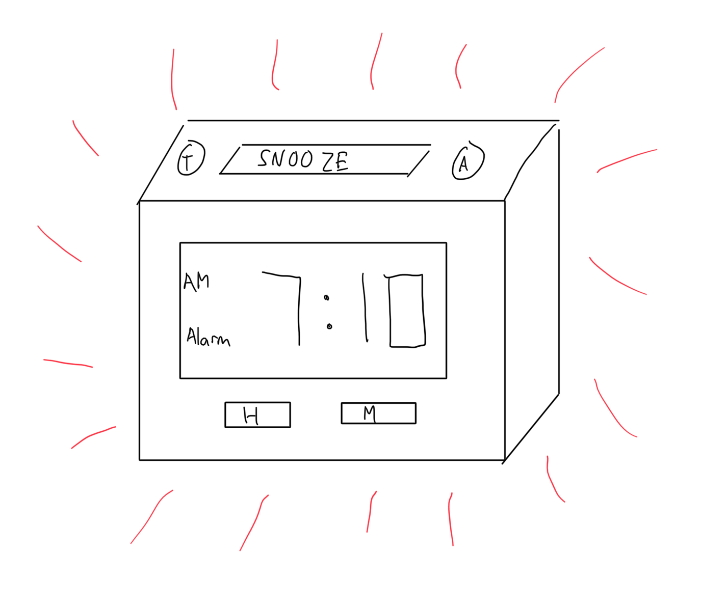

Personas & Storyboarding
What is the point of the digital alarm clock?
Virtually all phones have all the features of the alarm clock built-in while also having a smaller form factor and more intuitive software UI.
To answer this question, I chose to create personas and a storyboard for the humble digital alarm clock. Rather than choosing a specific product to observe people using, I focused on the overall interface of a typical "dumb" alarm clock.
Below is an example of an digital clock interface that I will be considering.
In my mind, these clocks serve three main purposes:
- telling time through some kind of always-on display
- setting and ringing alarms for specific times
- tuning in and listening to radios
The third point turned out to be a flawed assumption in my observations, but I will detail that later.
Research and Interviews
To get a better grasp on real world users of these archaic devices, I chose to remotely interview three of my family members. This was definitely not the most unbiased or diverse sample, but my options were limited in quarantine.
This proved to be somewhat of a challenge because there was no single model of clock that all three interviewees had access to, so my observations and data were not as consistent as I would have liked.
Nevertheless, the three clocks that my three interviewees used shared enough features to yield useful information.
Throughout this section, I will refer to my subjects as A, B, and C. As a quick overview of their backgrounds, A and B are married and working adults. C is a 1st year college student (undergraduate).
This was my process during each interview:
- Ask general questions about aspects of the clock interface
- Ask the interviewed person to perform a specific task and take notes while observing their actions
Before we go into a deeper dive into my data, here are some of my key observations:
- my assumption that most modern digital alarm clocks had radio functionality built in was false (only 1 out of my 3 interviewees had a clock with radio functionality)
- general conventions for setting time and alarms on these clocks are generally similar, but are not identical
- users usually don't set the time or alarms on their clocks often, so they often go through some (though not much) trial and error during these processes to remember the correct procedures
Interview Question Results
Below are the questions I asked and brief summaries of the responses I received.
- How often do you set the time on your clock?
- A: once every 3 months; time gets faster over time by about 5 min per quarter
- B: 2-5 times per year because of power outages and daylight savings adjustments
- C: used to do it often when power outages or move clock; now not so much because of backup battery
- How often do you check the time on your clock?
- A: once or twice on weekdays (right after waking up or before going to sleep); several more times on weekends because of naps
- B: at least 3 times a day - before going to sleep, after waking up in the morning, and during midnight bathroom breaks
- C: >50 times a day if they are in their room
- How often do you use the alarm functionality of your clock?
- A: daily (in the morning), 7:10am
- B: never; always awoken by A's alarm
- C: never; usually use phone for alarm because they have a bunk bed and the clock is on a desk one level below
- How often do you use the radio functionality of the clock? Why?
- A: never; too many buttons to press; radio app on phone has clearer audio
- B: never - does not listen to news on radio
- C: never - does not listen to radio
- Why would you use an digital clock instead of using your phone?
- A: would only use it if it's already easily within view
- B: would use it at night to avoid using wifi-connecting electronic devices near the bed and because of health concerns over radation from smart devices
- C: more convenient when sitting at desk because it has an always on display, unlike phone
- What is your most common use for the clock?
- A: tell time; alarms
- B: tell time, especially when they only need to know the time and want to avoid distractions
- C: tell time
- What is your favorite part of using the clock?
- A: sentimental value; clock was bought by loved one and still functions well enough
- B: night light - can use light from clock display to find orientation/location in the dark; the clock has worked well for around two decades
- C: it does its job (telling the time)
- What is the most frustrating part of using your clock?
- A: have to manually set the time once per quarter
- B: no backup battery to keep time in the case of a power outage
- C: if there are no batteries installed, they have to set time manually more often when adjusting clock positions; need to readjust position of clock every now and then for projection functionality
- Describe your daily interactions with your clock.
- A: check the time before go to bed, get awoken in the morning by music
- B: check before go to bed, use light to navigate to bathroom and back, check time in the morning
- C: look at often through day and night to check the time
- What is an improvement that you would most want to see in this clock?
- A: none because of low expectations; just needs to tell time correctly
- B: add support for backup batteries so that power outages don't reset the time
- C: remember time without using batteries; add more weight so it doesn't shift on desk over time
Observations
For this part of my interview process, I asked my subjects to perform the following tasks:
- Manually set the time on the clock to the current time
- Set an alarm for 8:10am
- Turn on the radio on the clock
- Tune into a radio station
- Turn the radio off
Below are summaries of notable parts of my observations for each of the interviewees.
Subject A
- had to set the time twice because they did not set am/pm correctly the first time
- expressed frustration while setting the time and alarm because they could only increment (and not decrement) hour and minute values
- tried to enable the radio in the clock for 30 seconds before remembering that they had to press the radio power button first
Subject B
- could not read the small font of the button labels and had to wear reading glasses to proceed
- noted that they could only increment (and not decrement) hours and minutes while setting time and alarms
- had to set the time twice because they did not set am/pm correctly the first time
- set the alarm but did not remember how to turn it on until finding the power switch for the alarm (which was placed away from the other buttons on the clock)
- clock had no radio functionality
Subject C
- process for setting time was done without notable hiccups
- had to attempt setting the alarm multiple times because the alarm-setting mode automatically deactivated if no button was pressed within a second after pressing the alarm-setting button
- clock had no radio functionality
Personas
From my diverse set of interviews, I can group my data to form 2 personas who find value in digital alarm clocks: one that represents working adults who have provided for their families, and one that represents a younger generation who are current or possibly recently graduated students.
Persona 1: Driven Dave
Driven Dave is a married father who travels fairly frequently as part of his job. He adheres to a strict, health-minded schedule, and he often likes to cut out the noise from smart-devices when he wants to focus on work or sleep.
Empathy Map
- Thinks
- I will go to bed in 30 minutes
- If I press this button, then this functionality of the clock will be toggled
- I'm getting too many notifications right now
- Feels
- Slightly overwhelmed by fancy internet-connected technology everywhere
- Frustrated when clock's time drifts off the true time over a few months
- Fond of old digital clock that has worked for years
- Says
- It's 9:30. Time to go to bed!
- I remember now, you have to long press this power button to turn on the alarm
- This font so small and hard to read
- Does
- Maintains a consistent schedule
- Reminds family members to improve their sleep schedules
- Wakes up early and awakens family members if necessary
- Keeps pressing buttons and making deductions on his clock until he gets what he wants
The main clock interface problems that Driven Dave faces are:
- small and/or low contrast labels for buttons
- lack of clear indication of whether the time is am or pm
- the need to relearn the infrequently used process of setting time or alarms
Driven Dave represents many users who are parents of older students as he has settled into a comfortable schedule that he has found over time, and he values quiet, "disconnected" time like others in his demographic who are concerned about the digital takeover of the lives of the younger generation.
Persona 2: Student Sammy
Student Sammy is a new college student who is in the process of finding and maintaining her own schedule away from home. She has grown up to be relatively tech-savvy, and she values convenience and utility in her choices while under COVID-19 quarantine.
Empathy Map
- Thinks
- I have to shower at 10pm before the hot water runs out
- The meeting for my new club is in an hour, and there's another meeting after that
- I'm too lazy to reach over and pick up my phone...
- It's so convenient that my clock projects the time on the ceiling
- Feels
- Somewhat anxious about all of the new events scheduled in calendar
- Unsure about exact plans next week
- Fear of missing out on "college life"
- Annoyed at having to press multiple buttons many times to set alarms
- Says
- Why can't this clock have more than 2 alarms set?
- I can't take a call then; I have a remote movie viewing for 2 hours
- Scheduling things is a pain
- Ugh. Now my clock is 20 seconds late
- Does
- Strictly follows calendar schedule
- Sometimes goes to bed later than ideal
- Buys things on Amazon that directly benefit daily life
- Glances at the clock every few minutes to keep track of time
The main clock interface problems that Student Sammy faces are:
- lack of options when setting alarms (especially multiple at once)
- the friction involved setting time or alarm through the clocks buttons compared to using a smartphone
- lack of bells and whistles (though this is sometimes a good thing)
Student Sammy represents a subset of new college freshman (or just college students in general) who are in the process of discovering and taking responsibility for themselves outside of the direct reach of their parents/family. Like many 1st years, Sammy is eager to explore her options in school, even if it's through conferencing software due to quarantine. Additionally, Sammy, like many students who have grown up using smartphones, is used to the flexibility and convenience offered by modern computing devices.
Storyboards
Now let's put one of these Personas to use! To outline a realistic scenario that would be encountered by Driven Dave, I created a simple storyboard below. Typically, these should convey more emotion, but I can't draw, and there can only be so much drama involved with setting up a digital alarm clock (right?).
-  At 9pm, Dave is tired and is ready to go to bed, but he is annoyed to find that a recent power outage has reset his clock's time and alarm.
-  Dave starts the process of setting things right by pressing the set button (S) on the clock to enter time setting mode.
-  Dave presses the hour and minute buttons until the correct hour (along with am/pm) and minute appears; then he presses the set button (S) to exit time setting mode.
-  To make sure that he gets up on time the next morning, Dave presses the alarm (A) button on the clock to enter alarm setting mode.
-  Dave presses the hour and minute buttons until the correct hour (along with am/pm) and minute appears; then he presses the alarm button (A) to exit alarm setting mode.
-  Dave toggles the alarm power switch several times until he sees an alarm indicator on the display to make extra sure that his alarm will sound in the morning.
-  Dave finally goes to bed.
-  The alarm set on the clock wakes Dave up at 7:10am, and he shuts it off before getting out of bed.
Conclusion
So, what did I learn after all this?
From my limited observations and personas, I think that digital alarm clocks are here to stay as time-telling devices. All 3 of my interviewees appreicated the simplicity and durability of their clocks; however, it seems that the more "advanced" features (e.g. alarms and radio) of modern digital alarm clocks are largely unused because smartphones execute them better.